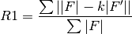

xfel.cxi package¶
Subpackages¶
- xfel.cxi.cspad_ana package
- Submodules
- xfel.cxi.cspad_ana.average_tbx module
- xfel.cxi.cspad_ana.common_mode module
- xfel.cxi.cspad_ana.cspad_tbx module
- xfel.cxi.cspad_ana.display_calib module
- xfel.cxi.cspad_ana.histogram_finalise module
- xfel.cxi.cspad_ana.hitfinder_tbx module
- xfel.cxi.cspad_ana.mod_average module
- xfel.cxi.cspad_ana.mod_average_cbf module
- xfel.cxi.cspad_ana.mod_cbf_hitfind module
- xfel.cxi.cspad_ana.mod_cbf_index module
- xfel.cxi.cspad_ana.mod_cspad_cbf module
- xfel.cxi.cspad_ana.mod_cspad_cbf_dump module
- xfel.cxi.cspad_ana.mod_daq_status module
- xfel.cxi.cspad_ana.mod_dump module
- xfel.cxi.cspad_ana.mod_dump_bitmap module
- xfel.cxi.cspad_ana.mod_event_info module
- xfel.cxi.cspad_ana.mod_filter module
- xfel.cxi.cspad_ana.mod_hdf5 module
- xfel.cxi.cspad_ana.mod_hitfind module
- xfel.cxi.cspad_ana.mod_illumination_filter module
- xfel.cxi.cspad_ana.mod_ledge module
- xfel.cxi.cspad_ana.mod_mar module
- xfel.cxi.cspad_ana.mod_param module
- xfel.cxi.cspad_ana.mod_pickle2cbf_dump module
- xfel.cxi.cspad_ana.mod_pulnix_dump module
- xfel.cxi.cspad_ana.mod_radial_average module
- xfel.cxi.cspad_ana.mod_spectra module
- xfel.cxi.cspad_ana.mod_spectra_view module
- xfel.cxi.cspad_ana.mod_view module
- xfel.cxi.cspad_ana.mod_xes module
- xfel.cxi.cspad_ana.parse_calib module
- xfel.cxi.cspad_ana.pixel_histograms module
- xfel.cxi.cspad_ana.xes_finalise module
- xfel.cxi.cspad_ana.xes_histograms module
- Module contents
- xfel.cxi.gfx package
- xfel.cxi.merging package
- xfel.cxi.postrefine package
- Submodules
- xfel.cxi.postrefine.justsum module
- xfel.cxi.postrefine.mod_energy module
- xfel.cxi.postrefine.mod_graddesc module
- xfel.cxi.postrefine.mod_leastsqr module
- xfel.cxi.postrefine.mod_normal_eqns module
- xfel.cxi.postrefine.mod_partiality module
- xfel.cxi.postrefine.mod_pdb module
- xfel.cxi.postrefine.mod_polar module
- xfel.cxi.postrefine.mod_results module
- xfel.cxi.postrefine.mod_util module
- xfel.cxi.postrefine.postrefine module
- xfel.cxi.postrefine.probe module
- xfel.cxi.postrefine.probe_best module
- xfel.cxi.postrefine.read_serial_and_img module
- xfel.cxi.postrefine.test_energy_model module
- xfel.cxi.postrefine.test_rs module
- Module contents
Submodules¶
xfel.cxi.average_spots module¶
-
xfel.cxi.average_spots.ImageFactory(path)¶
-
xfel.cxi.average_spots.img_add(path, img_sum, dist_sum, nrg_sum, nmemb)¶
-
xfel.cxi.average_spots.main(argv=None)¶
-
xfel.cxi.average_spots.spot_add(path, spot_sum, dist_sum, nrg_sum, nmemb)¶
xfel.cxi.completeness_plot module¶
xfel.cxi.correction_vector_plot module¶
-
class
xfel.cxi.correction_vector_plot.lines(params)¶ Bases:
xfel_ext.correction_vector_storeAttributes
all_tile_obs_spomaster_coordsmaster_cvmaster_tilesmean_cvoverall_cvradiisum_sq_cvtilecountstilesMethods
initialize_per_tile_sums(...)C++ signature : literals()register_line(...)C++ signature : vectors()weighted_average_angle_deg_from_tile(...)C++ signature : -
literals()¶
-
vectors()¶
-
-
class
xfel.cxi.correction_vector_plot.manage_sql(params)¶ Methods
get_cursor()get_frame_dictionary()initialize_tables_and_insert_command()insert(run, itile, tokens)send_insert_command()-
get_cursor()¶
-
get_frame_dictionary()¶
-
initialize_tables_and_insert_command()¶
-
insert(run, itile, tokens)¶
-
send_insert_command()¶
-
-
xfel.cxi.correction_vector_plot.run_correction_vector_plot(working_phil)¶
xfel.cxi.cxi_cc module¶
-
xfel.cxi.cxi_cc.binned_correlation(self, other, include_negatives=False)¶
-
xfel.cxi.cxi_cc.correlation(self, other, include_negatives=False)¶
-
xfel.cxi.cxi_cc.load_cc_data(params, reindexing_op, output)¶
-
xfel.cxi.cxi_cc.r1_factor(self, other, scale_factor=None, assume_index_matching=False, use_binning=False)¶ Get the R1 factor according to this formula

where F is self.data() and F’ is other.data() and k is the factor to put F’ on the same scale as F
-
xfel.cxi.cxi_cc.r_split(self, other, assume_index_matching=False, use_binning=False)¶
-
xfel.cxi.cxi_cc.run_cc(params, reindexing_op, output)¶
-
xfel.cxi.cxi_cc.scale_factor(self, other, weights=None, cutoff_factor=None, use_binning=False)¶ The analytical expression for the least squares scale factor.
K = sum(w * yo * yc) / sum(w * yc^2)
If the optional cutoff_factor argument is provided, only the reflections whose magnitudes are greater than cutoff_factor * max(yo) will be included in the calculation.
-
xfel.cxi.cxi_cc.split_sigma_test(self, other, scale, use_binning=False, show_plot=False)¶ Calculates the split sigma ratio test by Peter Zwart: ssr = sum( (Iah-Ibh)^2 ) / sum( sigma_ah^2 + sigma_bh^2)
where Iah and Ibh are merged intensities for a given hkl from two halves of a dataset (a and b). Likewise for sigma_ah and sigma_bh.
ssr (split sigma ratio) should approximately equal 1 if the errors are correctly estimated.
xfel.cxi.display_powder_arcs module¶
-
xfel.cxi.display_powder_arcs.apply_gaussian_noise(image, params)¶
-
xfel.cxi.display_powder_arcs.get_mmtbx_icalc(code, d_min, anomalous_flag=False)¶
-
xfel.cxi.display_powder_arcs.is_pinwheel_region(dx, dy)¶
-
xfel.cxi.display_powder_arcs.superimpose_powder_arcs(image, params)¶
xfel.cxi.display_spots module¶
-
xfel.cxi.display_spots.ImageFactory(filename)¶
-
class
xfel.cxi.display_spots.empty¶
-
xfel.cxi.display_spots.run_one(path, *command_line, **kwargs)¶
-
xfel.cxi.display_spots.run_one_index(path, *arguments, **kwargs)¶
-
xfel.cxi.display_spots.run_one_index_core(horizons_phil)¶
-
xfel.cxi.display_spots.view_raw_image(path, *command_line, **kwargs)¶
-
class
xfel.cxi.display_spots.wrapper_of_callback(info=None)¶ Bases:
objectMethods
display(path)display_with_callback(path)user_callback(dc, wxpanel, wx)for spot in self.spotfinder.images[self.frames[0]][“spots_total”]: -
display(path)¶
-
display_with_callback(path)¶
-
user_callback(dc, wxpanel, wx)¶ - for spot in self.spotfinder.images[self.frames[0]][“spots_total”]:
- for pxl in spot.bodypixels:
- x,y = wxpanel._img.image_coords_as_screen_coords(
- pxl.y, pxl.x)
dc.SetPen(wx.Pen(‘red’)) dc.SetBrush(wx.RED_BRUSH) dc.DrawCircle(x,y,1)
- x,y = wxpanel._img.image_coords_as_screen_coords(
- spot.ctr_mass_y(), spot.ctr_mass_x())
dc.SetPen(wx.Pen(‘green’)) dc.SetBrush(wx.GREEN_BRUSH) dc.DrawCircle(x,y,1)
-
xfel.cxi.integrate_image_api module¶
-
xfel.cxi.integrate_image_api.integrate_one_image(data, **kwargs)¶
xfel.cxi.merging_database module¶
-
class
xfel.cxi.merging_database.manager(params)¶ Methods
connection()initialize_db(indices)insert_frame(**kwargs)insert_observation(**kwargs)join()merging_schema_tables(runtag)positional_refinement_schema_tables(runtag)read_frames()read_indices()read_observations()-
connection()¶
-
initialize_db(indices)¶
-
insert_frame(**kwargs)¶
-
insert_observation(**kwargs)¶
-
join()¶
-
merging_schema_tables(runtag)¶
-
positional_refinement_schema_tables(runtag)¶
-
read_frames()¶
-
read_indices()¶
-
read_observations()¶
-
xfel.cxi.merging_database_fs module¶
-
class
xfel.cxi.merging_database_fs.manager(params)¶ Methods
initialize_db(indices)insert_frame(**kwargs)insert_observation(**kwargs)join()The join() function closes the database. read_frames()read_indices()read_observations()-
initialize_db(indices)¶
-
insert_frame(**kwargs)¶
-
insert_observation(**kwargs)¶
-
join()¶ The join() function closes the database.
-
read_frames()¶
-
read_indices()¶
-
read_observations()¶
-
xfel.cxi.merging_database_sqlite3 module¶
-
class
xfel.cxi.merging_database_sqlite3.manager(params)¶ Methods
initialize_db(indices)insert_frame(**kwargs)insert_observation(**kwargs)join()The join() function closes the database. merging_schema_tables(runtag)positional_refinement_schema_tables(runtag)read_frames()read_indices()read_observations()-
initialize_db(indices)¶
-
insert_frame(**kwargs)¶
-
insert_observation(**kwargs)¶
-
join()¶ The join() function closes the database.
-
merging_schema_tables(runtag)¶
-
positional_refinement_schema_tables(runtag)¶
-
read_frames()¶
-
read_indices()¶
-
read_observations()¶
-